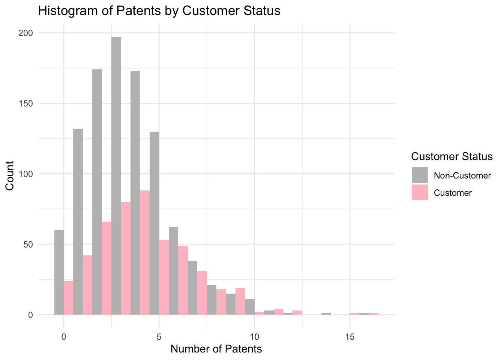

Blueprinty is a small firm that makes software for developing blueprints specifically for submitting patent applications to the US patent office. Their marketing team would like to make the claim that patent applicants using Blueprinty’s software are more successful in getting their patent applications approved. Ideal data to study such an effect might include the success rate of patent applications before using Blueprinty’s software and after using it. Unfortunately, such data is not available.
However, Blueprinty has collected data on 1,500 mature (non-startup) engineering firms. The data include each firm’s number of patents awarded over the last 5 years, regional location, age since incorporation, and whether or not the firm uses Blueprinty’s software. The marketing team would like to use this data to make the claim that firms using Blueprinty’s software are more successful in getting their patent applications approved.
Data
Load the data for this project:
library(tidyverse)
── Attaching core tidyverse packages ──────────────────────── tidyverse 2.0.0 ──
✔ dplyr 1.1.4 ✔ readr 2.1.5
✔ forcats 1.0.0 ✔ stringr 1.5.1
✔ ggplot2 3.5.1 ✔ tibble 3.2.1
✔ lubridate 1.9.3 ✔ tidyr 1.3.1
✔ purrr 1.0.2
── Conflicts ────────────────────────────────────────── tidyverse_conflicts() ──
✖ dplyr::filter() masks stats::filter()
✖ dplyr::lag() masks stats::lag()
ℹ Use the conflicted package (<http://conflicted.r-lib.org/>) to force all conflicts to become errors
blueprinty <-read_csv("blueprinty.csv")
Rows: 1500 Columns: 4
── Column specification ────────────────────────────────────────────────────────
Delimiter: ","
chr (1): region
dbl (3): patents, age, iscustomer
ℹ Use `spec()` to retrieve the full column specification for this data.
ℹ Specify the column types or set `show_col_types = FALSE` to quiet this message.
Now, compare histograms and means of number of patents by customer status.
#means of number of patents by customer statusblueprinty %>%group_by(iscustomer) %>%summarise(mean_patents =mean(patents),sd_patents =sd(patents),n =n())
#histogramggplot(blueprinty, aes(x = patents, fill =factor(iscustomer))) +geom_histogram(binwidth =1, position ="dodge") +scale_fill_manual(values =c("gray", "pink"),labels =c("Non-Customer", "Customer")) +labs(title ="Histogram of Patents by Customer Status",x ="Number of Patents",y ="Count",fill ="Customer Status") +theme_minimal()

From above analysis, I observe that on average the Blueprinty customers have ~4.13 patents and for the non-customers, they have ~3.47 patents. By comparing this, we know that for the Blueprinty customers, they are more likely to have higher patent counts than the non-customers.The histogram also supports this hypothesis. I will use Poisson regression to better estimate it further.
Blueprinty customers are not selected at random. It may be important to account for systematic differences in the age and regional location of customers vs non-customers.
Compare regions and ages by customer status, I notice that the mean age for non-customers is about 26.1 while the mean age for customers is about 26.9, which is slightly older here. The box plot shows the distribution of ages for the two customer status; for the customers (pink box), it has higher median and wider spread.
For the regional location part, the distribution here seems varies with customers’ status. There is a higher portion of customers located in Northeast than other areas, which indicates the customer adoption is not uniform and may not be random. Overall, both of them shows the importance of controlling age and region in the analysis to minimize the bias in the data.
Estimation of Simple Poisson Model
Since our outcome variable of interest can only be small integer values per a set unit of time, we can use a Poisson density to model the number of patents awarded to each engineering firm over the last 5 years. We start by estimating a simple Poisson model via Maximum Likelihood.
Write down the mathematically the likelihood for_ \(Y \sim \text{Poisson}(\lambda)\). Note that \(f(Y|\lambda) = e^{-\lambda}\lambda^Y/Y!\).
–For a single observation Y_i ~ Poisson(lambda_i), the probability mass function is: f(Y_i | lambda_i)=exp(-lambda_i)*lambda_i^Y_i/factorial(Y_i) –For multiple independent observations Y_1, …,Y_n with corresponding lambda_1, …, lambda_n, the joint likelihood is the product of individual likelihoods: L(lambda)=Π[ exp(-lambda_i)* lambda_i^Y_i/Y_i!] over i=1 to n –Taking the natural log of the likelihood gives the log-likelihood: logL(lambda)=Σ[-lambda_i+ Y_i*log(lambda_i)-log(Y_i!)] over i = 1 to n –log-likelihood function is to take lambda and observed Y
Code the likelihood (or log-likelihood) function for the Poisson model. This is a function of lambda and Y. For example:
Use the function to plot lambda on the horizontal axis and the likelihood (or log-likelihood) on the vertical axis for a range of lambdas (use the observed number of patents as the input for Y).
poisson_loglikelihood <-function(lambda, Y) {sum(-lambda+Y*log(lambda) -lgamma(Y+1))}#use one observed Y valueY_eg <- blueprinty$patents[10]#lambda values sequencelambs <-seq(0.1, 10, by =0.1)#find log-likelihood for each lambdaloglik_vals <-sapply(lambs, function(l) poisson_loglikelihood(l,Y_eg))# plot log-likelihood curveplot(lambs, loglik_vals, type ="l",col ="blue", xlab =expression(lambda),ylab ="Log Likelihood",main =paste("Log Likelihood at Y =", Y_eg))abline(v=Y_eg, col="pink")
Let’s ttake the first derivative of log-likelihood, set it equal to zero and solve for lambda. I find lambda_mle is Ybar, which “feels right” because the mean of a Poisson distribution is lambda.
So here, I begin with the log-likelihood function for n i.i.d. observations from a Poisson distribution with the common mean , I get:
L() = _{i=1}^n ( -+ Y_i - Y_i! )
I then drop the term Y_i! because it does not depend on .Now, it simplify to the following equation:
L() = -n+ _{i=1}^n Y_i
Taking the first derivative with respect to :
-n + _{i=1}^n Y_i
Now, let the derivative to be zero and I want to use it to find the maximum value.Then I find:
= _{i=1}^n Y_i = {Y}
Now, find the MLE of lambada by maximizing the log-likelihood function using R’s optim().
#negated log-likelihood function for minimizationneg_ll <-function(lambda, Y) {#avoid log(0)if (lambda <=0) return(Inf)return(-sum(-lambda + Y *log(lambda) -lgamma(Y +1)))}Y_data <- blueprinty$patents#minimize the negative log-likelihoodmle_result <-optim(par =1, fn = neg_ll,Y=Y_data,method="BFGS",hessian =TRUE)lambda_mle <- mle_result$par #estimate lambdalambda_mle
[1] 3.68467
mean(Y_data)
[1] 3.684667
Estimation of Poisson Regression Model
Next, we extend our simple Poisson model to a Poisson Regression Model such that \(Y_i = \text{Poisson}(\lambda_i)\) where \(\lambda_i = \exp(X_i'\beta)\). The interpretation is that the success rate of patent awards is not constant across all firms (\(\lambda\)) but rather is a function of firm characteristics \(X_i\). Specifically, we will use the covariates age, age squared, region, and whether the firm is a customer of Blueprinty.
# update log-likelihood for Poissonpoisson_regression_likelihood <-function(beta, Y, X) {# X:covariates matrix, beta:vector of coefficients lambda <-exp(X %*% beta) #inverse loglik <-sum(-lambda+Y*log(lambda)-lgamma(Y+1))return(-loglik)}
From the above table, the age coefficient is positive since it says 0.1158, while the age square coefficient is negative at –0.0022. This suggests a concave relationship between the firm age and patent count and it means the older firms tend to produce more patents up to a point, after which the effect disappear. The iscustomer coefficient is positive at 0.0607. It indicates that firms using Blueprinty’s software may have a higher expected number of patents. In addition, the regional effects are all negative compared to the omitted base region. However, none of these appear statistically significant at conventional levels.
Call:
glm(formula = patents ~ age + I(age^2) + region + iscustomer,
family = poisson(), data = blueprinty)
Coefficients:
Estimate Std. Error z value Pr(>|z|)
(Intercept) -0.508920 0.183179 -2.778 0.00546 **
age 0.148619 0.013869 10.716 < 2e-16 ***
I(age^2) -0.002971 0.000258 -11.513 < 2e-16 ***
regionNortheast 0.029170 0.043625 0.669 0.50372
regionNorthwest -0.017574 0.053781 -0.327 0.74383
regionSouth 0.056561 0.052662 1.074 0.28281
regionSouthwest 0.050576 0.047198 1.072 0.28391
iscustomer 0.207591 0.030895 6.719 1.83e-11 ***
---
Signif. codes: 0 '***' 0.001 '**' 0.01 '*' 0.05 '.' 0.1 ' ' 1
(Dispersion parameter for poisson family taken to be 1)
Null deviance: 2362.5 on 1499 degrees of freedom
Residual deviance: 2143.3 on 1492 degrees of freedom
AIC: 6532.1
Number of Fisher Scoring iterations: 5
#combine glm and optim output all together in a tablecompare <-data.frame(Term =names(coef(glm_model)),Estimate_glm =coef(glm_model),Estimate_optim = coef_table$Estimate,SE_glm =summary(glm_model)$coefficients[, "Std. Error"],SE_optim = coef_table$Std_Error)knitr::kable(compare, digits=4, caption="comparison of glm() and optim() estimates")
comparison of glm() and optim() estimates
Term
Estimate_glm
Estimate_optim
SE_glm
SE_optim
(Intercept)
(Intercept)
-0.5089
-0.1257
0.1832
0.1122
age
age
0.1486
0.1158
0.0139
0.0064
I(age^2)
I(age^2)
-0.0030
-0.0022
0.0003
0.0001
regionNortheast
regionNortheast
0.0292
-0.0246
0.0436
0.0434
regionNorthwest
regionNorthwest
-0.0176
-0.0348
0.0538
0.0529
regionSouth
regionSouth
0.0566
-0.0054
0.0527
0.0524
regionSouthwest
regionSouthwest
0.0506
-0.0378
0.0472
0.0472
iscustomer
iscustomer
0.2076
0.0607
0.0309
0.0321
From the above results, it verifies the estimates from glm() and optim() are mostly consistent,and this further confirms the right of the MLE.
The table demonstrates that both age and age square show a clear inverted-U relationship with the patent counts. The iscustomer has a positive effect which suggests Blueprinty users file more patents, although the size differs slightly between each method. Third, the region effects are small and not statistically significant at the level, while the intercept varies more, mostly may due to optimizer sensitivity. Overall, the firm age and customer status are the most influential predictors.
Based on above results, the firms that use Blueprinty’s software are predicted to receive ~0.22 more patents on average than similar firms which do not use the software. This estimated effect is small, but it can support the claim that Blueprinty may help improve the patenting outcomes.
AirBnB Case Study
Introduction
AirBnB is a popular platform for booking short-term rentals. In March 2017, students Annika Awad, Evan Lebo, and Anna Linden scraped of 40,000 Airbnb listings from New York City. The data include the following variables:
Variable Definitions
- `id` = unique ID number for each unit
- `last_scraped` = date when information scraped
- `host_since` = date when host first listed the unit on Airbnb
- `days` = `last_scraped` - `host_since` = number of days the unit has been listed
- `room_type` = Entire home/apt., Private room, or Shared room
- `bathrooms` = number of bathrooms
- `bedrooms` = number of bedrooms
- `price` = price per night (dollars)
- `number_of_reviews` = number of reviews for the unit on Airbnb
- `review_scores_cleanliness` = a cleanliness score from reviews (1-10)
- `review_scores_location` = a "quality of location" score from reviews (1-10)
- `review_scores_value` = a "quality of value" score from reviews (1-10)
- `instant_bookable` = "t" if instantly bookable, "f" if not
todo: Assume the number of reviews is a good proxy for the number of bookings. Perform some exploratory data analysis to get a feel for the data, handle or drop observations with missing values on relevant variables, build one or more models (e.g., a poisson regression model for the number of bookings as proxied by the number of reviews), and interpret model coefficients to describe variation in the number of reviews as a function of the variables provided.
#exploratory data analysisairbnb <-read_csv("airbnb.csv")
New names:
Rows: 40628 Columns: 14
── Column specification
──────────────────────────────────────────────────────── Delimiter: "," chr
(3): last_scraped, host_since, room_type dbl (10): ...1, id, days, bathrooms,
bedrooms, price, number_of_reviews, rev... lgl (1): instant_bookable
ℹ Use `spec()` to retrieve the full column specification for this data. ℹ
Specify the column types or set `show_col_types = FALSE` to quiet this message.
• `` -> `...1`
From the above results, I notice that listings with more bedrooms, higher cleanliness scores, and instant bookable status tend to have more reviews. The bathrooms and higher prices are related to fewer reviews. In addition, for the shared rooms, it has fewer reviews than the entire homes, but the private rooms show negative effect. The cleanliness is the most influential review score here; location and value have unexpected negative coefficients; this may be due to bias existing in the sample. To sum up, from the exploration of the data, it shows the convenience, cleanliness, and room type are key drivers of booking activity.